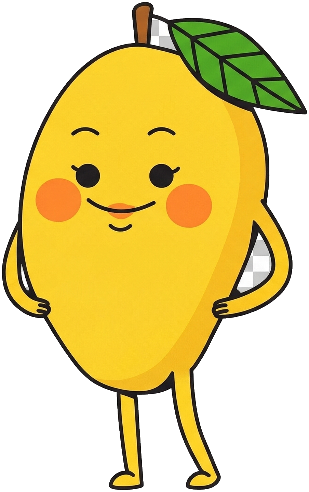
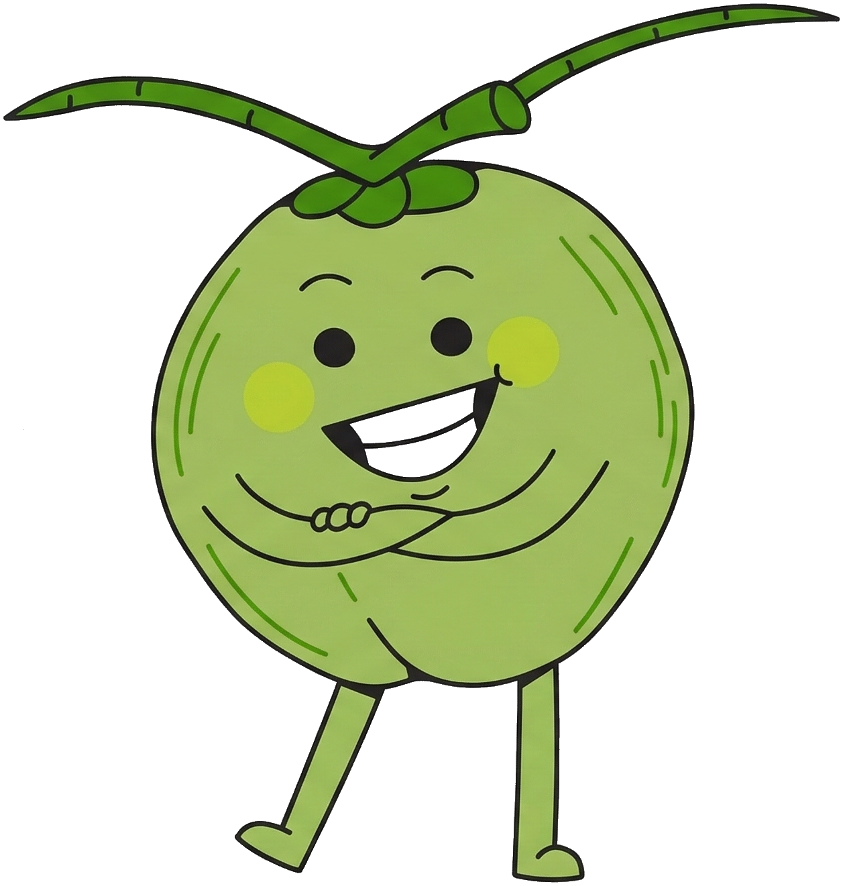
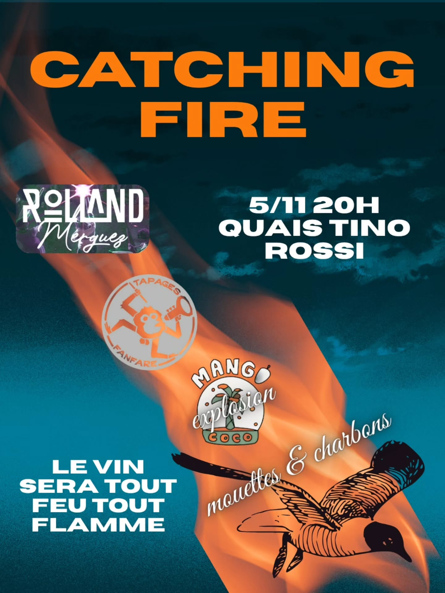

Soirée Quai Fanfares
sur les Quais Tino Rossi

Prochaine soirée :
Chargement...

🔥 Grève générale 🔥
Paris prend feu !
❤️🔥🎶 J'ai 2 passions, la fanfare et la révolution 🎶❤️🔥
☀️ En journée : MangoCoco joue dans la manif ✊🎺
🌙 Dès 20h (à peu près) : soirée Fanfare et Vin Chaud sur les Quais Tino Rossi
Données météo : Open-Meteo.com — Lieu : Quais Tino Rossi, Paris 5e